Iceland, 2017
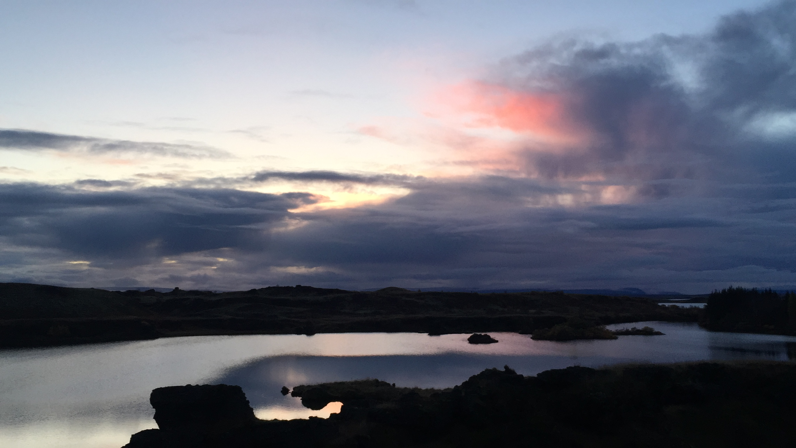
Mývatn at sunset
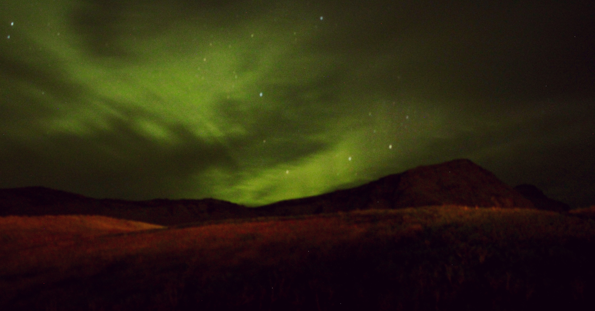
Aurora at Vík
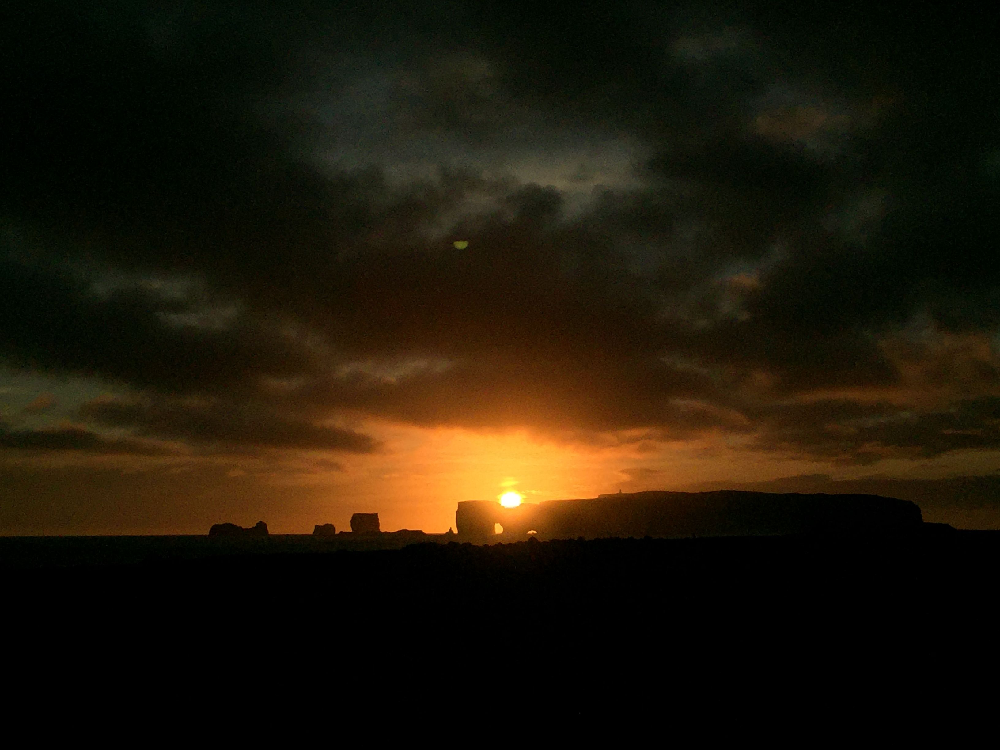
Sunset at Black Sand Beach
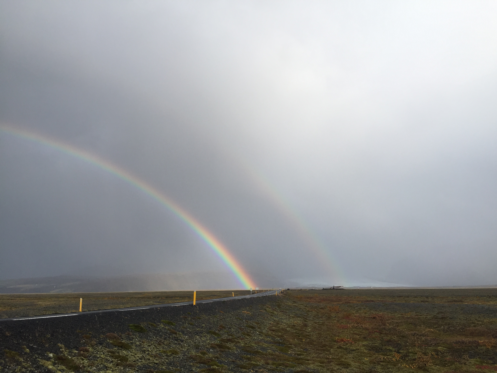
Double rainbows
London, UK, 2015
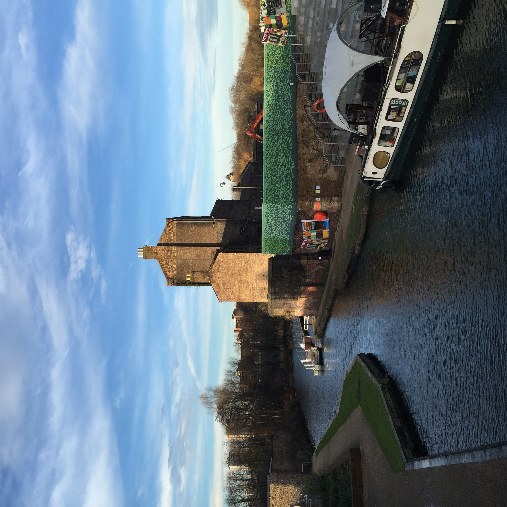
Canal Reach and the bookstore near King's Cross
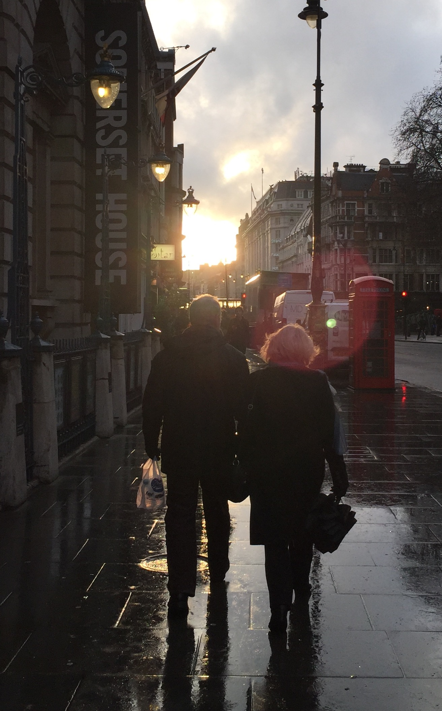
A couple walking in the city center after the rain
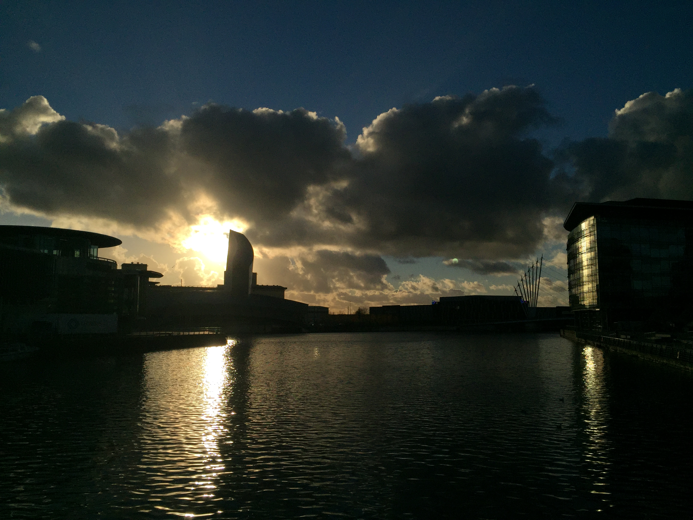
Manchester
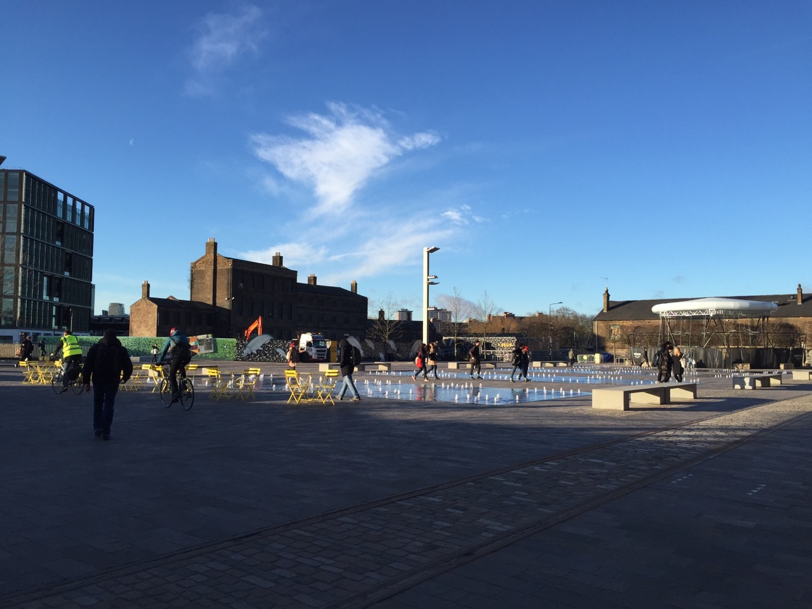
UAL (University of the Arts London) campus for Central Saint Martins
Tromsø, Norway, 2015
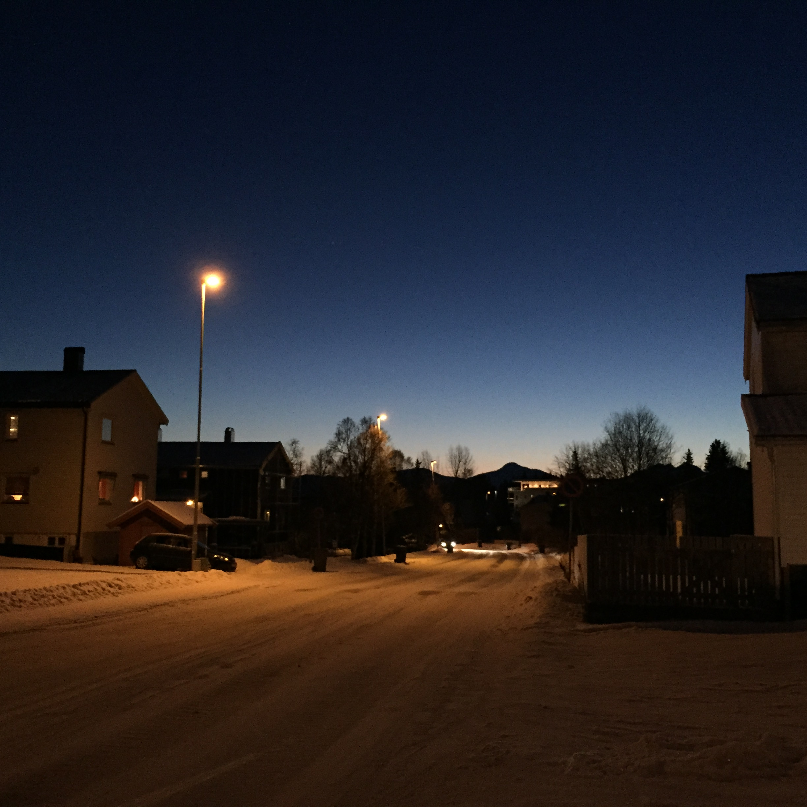
Getting lost in the residential area
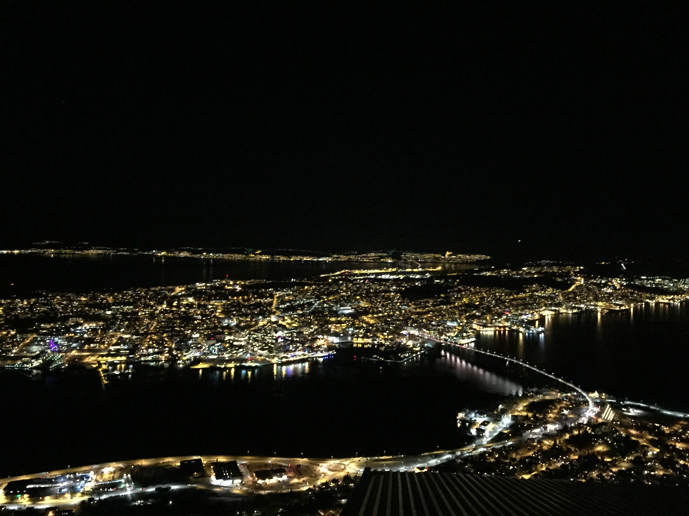
Night view of Tromso from the cable car cafe
Japan, 2014
As we got further and further away, it [the Earth] diminished in size. Finally it shrank to the size of a marble, the most beautiful you can imagine. That beautiful, warm, living object looked so fragile, so delicate, that if you touched it with a finger it would crumble and fall apart. Seeing this has to change a man.
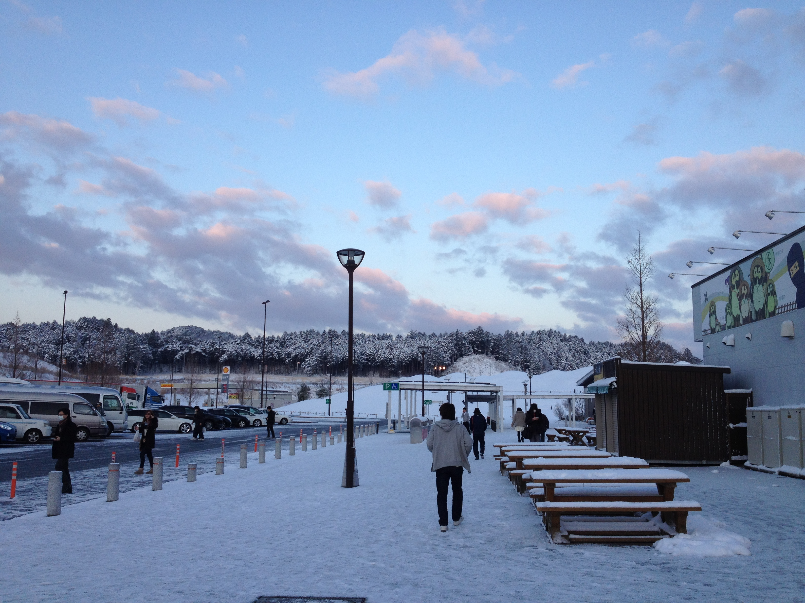
View at highway rest stop during overnight bus trip
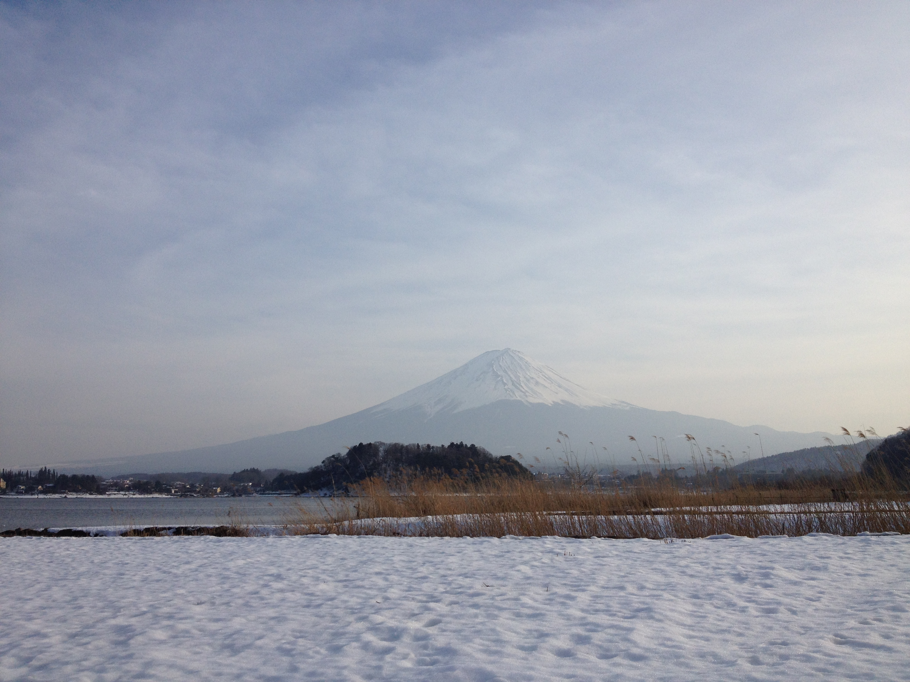
Mount Fuji